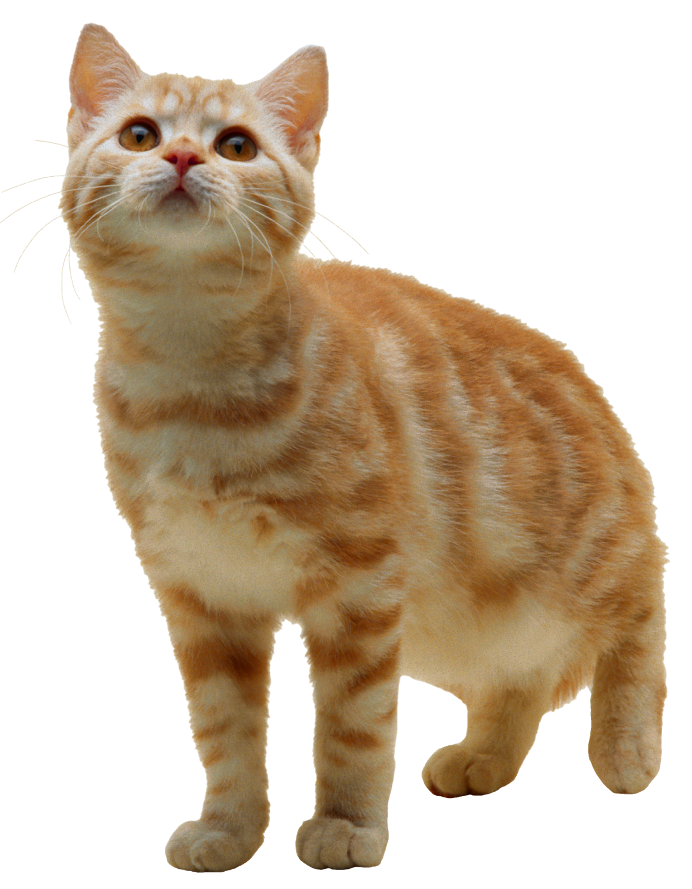
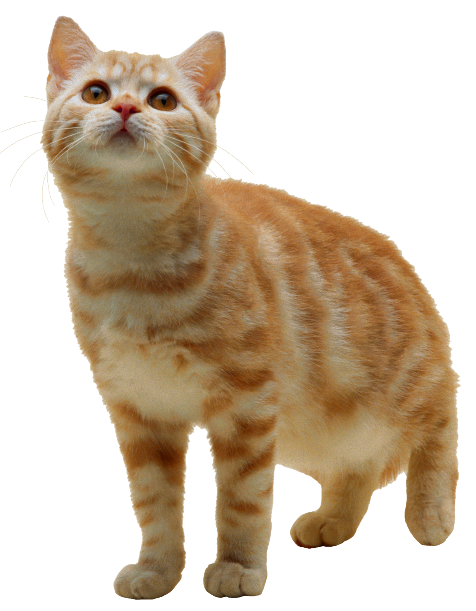
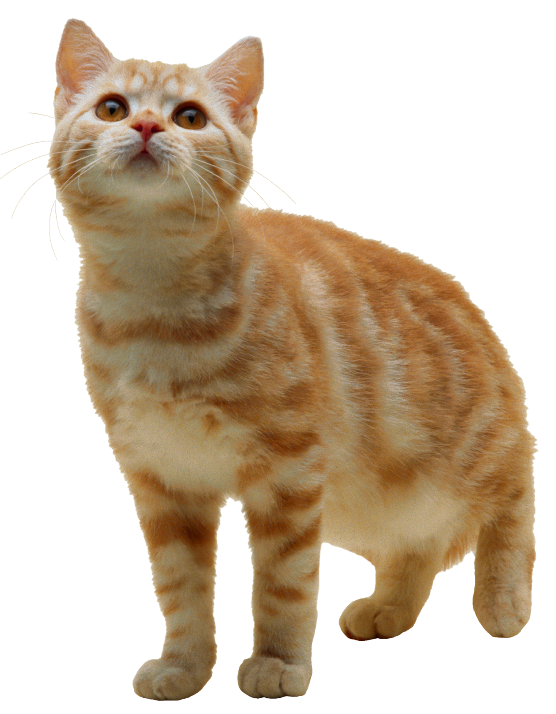

Doguitos e Gatitos
Home | Perfil | Sobre Nos | Contato | Sair
Entrar
Nome:
Sobrenome:
Email:
Senha:
Confirmar Senha:

Projeto desenvolvido no Instituto Federal Catarinense - Campus Araquari pelas alunas Anna Morais, Pamela Quint e Raissa Damasceno do Tecnico em Informatica Integrado ao Ensino Medio no ano de 2019.
 
